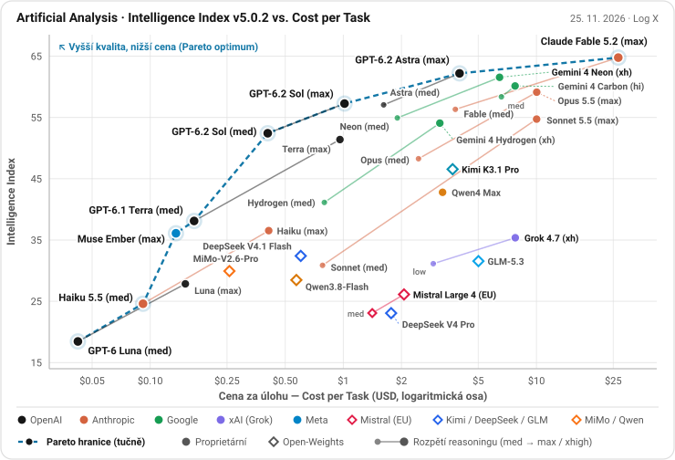
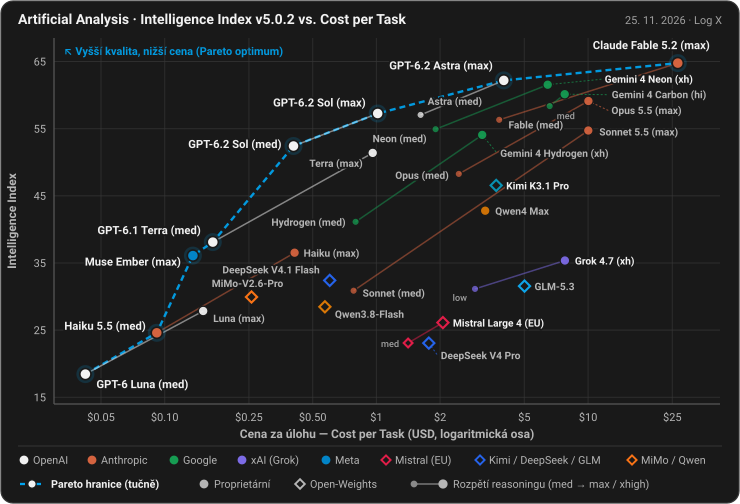

Microsoft Frontier Day Praha · 26. listopadu 2026
Od asistenta k autopilotům
Seznamte se s digitálními kolegy
Viktor Kunst · Tomáš Kubica
Návaznost na ukázku u Javorny
Stejný zážitek v Teams, dvě cesty pod kapotou
Motor pod kapotou
Copilot Harness v Rustu, kde agenti běží a otevřený Hermes Enterprise.
Copilot Harness
Jeden Rust harness pohání SaaS i vlastní agenty
Provoz agentů
Čtyři úrovně od infrastruktury po SaaS
Otevřený ekosystém
Hermes Enterprise dává otevřenému agentu Teams UX
- Open-source agent s učením dovedností.
- Opakované kroky převádí do kódu.
- Oficiální partnerství z Ignite 2026.
- Dnes ACA Sandboxes (20 tis.+ instancí).
- Chystáme nativní provoz ve Foundry.
- Identita v Teams přes Agent 365.
Spolupráce v M365 a provoz aplikací
Autopilot, Workspaces, hosting aplikace a shrnutí M365 SaaS vs. Azure.
M365 SaaS
Autopilot je kolega, Workspaces prostor pro tým
- Role Otta: vždy běžící autonomní agent.
- Vlastní počítač, paměť, rutiny a Entra ID.
- Dlouhodobý cíl a manažer.
- Sdílený prostor, nikoli další agent.
- Evoluce Notebooks z „já“ na „my“.
- Lidé i agenti spolu v Copilotu a Teams.
Webová aplikace z dema
Webová aplikace běží v Azure i M365 managed
- Cesta z ukázky: microVM startující pod 1 s.
- Kontrola nad VNET, backendem a identitou.
- Uspání a horký start, neplatím když neběží.
- Spravovaný hosting aplikací i bez Azure.
- Copilot Code, Cowork, Studio i 3P nástroje.
- Nativní Work IQ, Entra a DLP v M365.
Shrnutí · M365 SaaS vs. Azure
Volba je mezi rychlostí nasazení a mírou kontroly
| Oblast | M365 SaaS & Studio | Foundry, SDK 2.0 & OSS |
|---|---|---|
| Čas nasazení | Dny, 1 500+ konektorů | Vlastní vývoj a CI/CD |
| Provoz | Managed Runtime, DLP | VNET, CMK, ACA Sandboxes |
| Modely a smyčka | Kurátorované + Auto | 11 000+ modelů, vlastní harness |
| Nejlepší fit | Týmová práce v M365 | Vlastní produkty a OSS |
Multi-model a ekonomika
Proč nevsázet na jednoho tvůrce modelu a jak funguje Pareto hranice.
Multi-model strategie
Pořadí modelů se dnes mění během jediného týdne
- Za posledních 60 dní vyšlo přes 30 frontier LLM modelů (průměrně 4 týdně); Foundry nabízí přes 11 000 modelů.
- Jen během Ignite: GPT-6.2 (17. 11.) a hned druhý den Gemini 4 Neon (18. 11.).
- Multi-model platforma umožňuje nasadit nejlepší model bez přepisování agentů.
Pareto hranice
Rozhoduje cena úlohy, ne ceník tokenů


- Uzavřený model nemusí být drahý — viz GPT-6 Luna a Haiku 5.5.
- Cenu určují všechny spálené tokeny včetně uvažování (med → max).
- Open-weights nejsou zdarma: Kimi K3.1 Pro (1,56 TB vah) vyžaduje 16× H200/B200 v DC.
Zdroj dat: Artificial Analysis — https://artificialanalysis.ai (Intelligence Index v5.0.2, 25. 11. 2026)
Směrování a MAI
Auto, Fusion a modely MAI
- Modely: Code-2 (GitHub GA), Cyber-2-Flash, Image-2.7, Voice-3, Realtime-1, Decision 1.1.
- Fine-tuning: specializace (Excel) zlevňuje AI až 10×.
- Výhled: velké MAI, licencování vah a izolovaný trénink v tenantu.
Společně v jedné firmě
Obě strany mince se v praxi doplňují
-
Začněte v M365 SaaS
Workspaces, Autopilot a Studio pokryjí týmové scénáře bez složitého provozu.
-
Specializujte přes Foundry a OSS
Znalostní báze, pokročilé scénáře, otevřenost a integrace, hill-climbing.
-
Jednotná UX a multi-model
Auto, Fusion a MAI hlídají kvalitu i cenu.
-
Řízení a bezpečnost s Agent 365
Governance agentů napříč prostředími, ať běží kdekoli.
Jedna zkušenost pro lidi.
Svoboda volby pod kapotou.